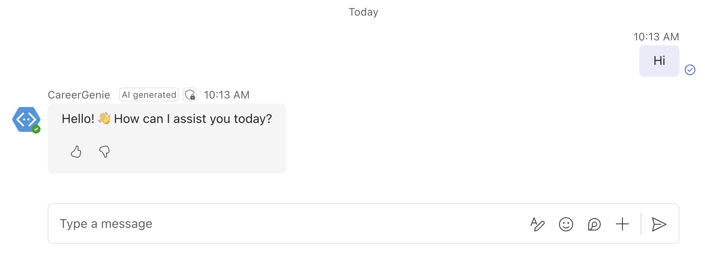
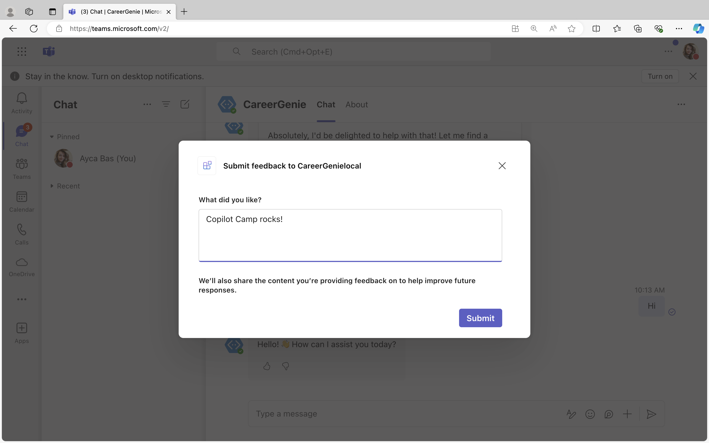
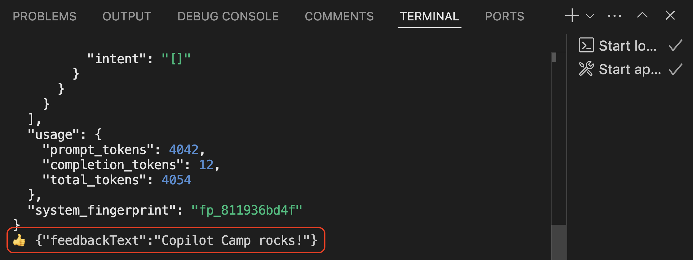
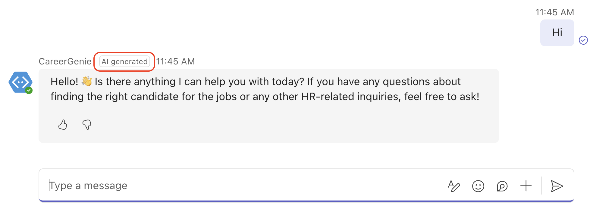

Lab BTA3 - Enhance User Experience
In this lab you will learn about the Powered by AI, a set of features Teams AI library provides, and utilize them in your custom engine agent to enhance the user experience.
In this lab you will:
- Learn what are the Powered by AI features
- Enable Feedback Loop to collect user feedback
- Customize citations with Adaptive Cards
- Enable Generated by AI label
- Enable Sensitivity Label
Do these labs if you want to build a Custom engine agent with custom AI model and orchestration using Azure OpenAI and Teams AI library
Introduction
What is Powered by AI?
Powered by AI is a set of features provided by the Teams AI library that enhances interactions with custom engine agents, making them more engaging and user-friendly. These features include:
-
Feedback Loop: Users can rate AI responses with a thumbs up or down. This feedback helps refine the AI's accuracy and usefulness over time.
-
Citations: The AI provides references to the sources of information, ensuring transparency and credibility.
-
Generated by AI: Messages created by the AI system are labeled as "AI generated," so users can distinguish between AI and human responses.
-
Sensitivity Information: If the information shared is sensitive, a sensitivity label will appear, advising whether it can be shared outside your organization.
In the previous exercise, you explored Retrieval-Augmented Generation (RAG) and its integration into your custom engine agent. In this exercise, you'll enhance the user experience by leveraging "Powered by AI" features. Follow these steps:
- Implement the Feedback Loop
- Customize Citations
- Label AI-Generated messages
- Display Sensitivity information
By incorporating these "Powered by AI" features, you'll make your custom engine agent more transparent, reliable, and user-friendly, which will enhance the overall user experience.
Exercise 1: Enable Feedback Loop
In this exercise, you can continue using the same source code you developed in the previous lab.
Step 1: Integrate Feedback Loop in your app
In your project, open src/app/app.ts, locate your application instance and add enable_feedback_loop: true inside the ai property brackets. The updated application instance will look like the following:
const app = new Application({
storage,
ai: {
planner,
//feedback loop is enabled
enable_feedback_loop: true
},
});
To handle the feedback responses, add the following code snippet in the src/app/app.ts:
app.feedbackLoop(async (_context, _state, feedbackLoopData) => {
if (feedbackLoopData.actionValue.reaction === 'like') {
console.log('üëç' + ' ' + feedbackLoopData.actionValue.feedback!);
} else {
console.log('üëé' + ' ' + feedbackLoopData.actionValue.feedback!);
}
});
Step 2: Test the Feedback Loop feature
Let's test Career Genie with the Feedback Loop feature. Start debugging your app by selecting Run and Debug tab on Visual Studio Code and Debug in Teams (Edge) or Debug in Teams (Chrome). This will open Microsoft Teams in your browser. When your app details appear in Teams, select Add to start chatting with your app.
Tip: Testing this exercise locally
Make sure to test and debug this exercise on Teams locally, as some of the Teams AI library capabilities you've implemented in your app so far won't smoothly work in the Teams App Test Tool.
Before testing the Feedback Loop, type "Hi" or ask a question similar to "Suggest me .NET developers who can speak Spanish." You'll notice that the response from your custom engine agent includes thumbs up and down buttons at the bottom left corner.

Now, let's test the feedback loop. Click on either the thumbs up or down button. A feedback card will immediately pop up. Provide your feedback in the text field on the card and click Submit.

To verify that your feedback was recorded, return to Visual Studio Code and check your terminal. You'll see the feedback you provided, including whether you gave a thumbs up or down and your comment.

Dive deeper into the Feedback Loop by debugging
Debugging the code is an excellent way to understand how it works. To delve deeper into how the Feedback Loop handler functions, set a breakpoint at app.feedbackLoop. Run the app and test the Feedback Loop by clicking thumbs up or down. You'll observe that feedbackLoopData.actionValue.reaction captures the reaction, while feedbackLoopData.actionValue.feedback captures the text feedback you provide.
Exercise 2: Customize citations with Adaptive Cards
When you define a data source in a custom engine agent, the Teams AI library dynamically enables citations to reference related documents. Recognize the current experience in your custom engine agent, ask a question similar to "Suggest me .NET developers who can speak Spanish.". You will realize that you can hover over the citation to see the beginning of the document.

In this exercise, you'll tailor this citation experience further and use Adaptive Cards to customize the way citations are presented.
Step 1: Create an Adaptive Card for citations
Go to src/app/ folder and create a new file named card.ts. Add the following code snippet inside the card.ts file:
import { AdaptiveCard, Message, Utilities } from '@microsoft/teams-ai';
/**
* Create an adaptive card from a prompt response.
* @param {Message<string>} response The prompt response to create the card from.
* @returns {AdaptiveCard} The response card.
*/
//Adaptive card to display the response and citations
export function createResponseCard(response: Message<string>): AdaptiveCard {
const citationCards = response.context?.citations.map((citation, i) => ({
type: 'Action.ShowCard',
title: `${i+1}`,
card: {
type: 'AdaptiveCard',
body: [
{
type: 'TextBlock',
text: citation.title,
fontType: 'Default',
weight: 'Bolder'
},
{
type: 'TextBlock',
text: citation.content,
wrap: true
}
]
}
}));
const text = Utilities.formatCitationsResponse(response.content!);
return {
type: 'AdaptiveCard',
body: [
{
type: 'TextBlock',
text: text,
wrap: true
},
{
type: 'TextBlock',
text: 'Citations',
wrap: true,
fontType: 'Default',
weight: 'Bolder'
},
{
type: 'ActionSet',
actions: citationCards
}
],
$schema: 'http://adaptivecards.io/schemas/adaptive-card.json',
version: '1.5'
};
}
This Adaptive Card allows you to list citations as Action.ShowCard buttons which show more details when clicked. It also displays the main content of the response alongside the citation buttons. If a user wants to learn more about a citation, they can click the button to read the entire document.
Step 2: Use PredictedSayCommand to customize the citation experience
What does PredictedSayCommand do?
A PredictedSayCommand is a response directive that the AI system executes. By customizing PredictedSayCommand, you gain granular control over integrating Powered by AI features like citations, feedback loops into the custom engine agent's activities. This allows you to precisely tailor the AI responses to meet your application needs.
Go to src/app/app.ts and add the following snippet on top of your code to import your adaptive card:
import { createResponseCard } from './card';
Add CardFactory inside the "botbuilder" import, the updated version of the import will look like the following:
import { CardFactory, MemoryStorage, MessageFactory, TurnContext } from "botbuilder";
Add AI and PredictedSayCommand inside the "@microsoft/teams-ai" import, the updated version of the import will look like the following:
import { Application, ActionPlanner, OpenAIModel, PromptManager, AI, PredictedSayCommand} from "@microsoft/teams-ai";
Add the following PredictedSayCommand action in the src/app/app.ts to customize the citation:
app.ai.action<PredictedSayCommand>(AI.SayCommandActionName, async (context, state, data, action) => {
let activity;
if (data.response.context && data.response.context.citations.length > 0 ) {
const attachment = CardFactory.adaptiveCard(createResponseCard(data.response));
activity = MessageFactory.attachment(attachment);
}
else {
activity = MessageFactory.text(data.response.content);
}
activity.entities = [
{
type: "https://schema.org/Message",
"@type": "Message",
"@context": "https://schema.org",
"@id": ""
}
];
activity.channelData = {
feedbackLoopEnabled: true
};
await context.sendActivity(activity);
return "success";
});
Step 3: Test the customized citation experience
Let's test Career Genie with the customized citation experience. Start debugging your app by selecting Run and Debug tab on Visual Studio Code and Debug in Teams (Edge) or Debug in Teams (Chrome). Microsoft Teams will pop up on your browser. This will open Microsoft Teams in your browser. When your app details appear in Teams, select Add to start chatting with your app.
Tip: Testing this exercise locally
Make sure to test and debug this exercise on Teams locally, as some of the Teams AI library capabilities you've implemented in your app so far won't smoothly work in the Teams App Test Tool.
To test the new citation experience, start by greeting Career Genie with "Hi" or "Hello". Then, try to ask questions similar to "Can you suggest any candidates for a senior developer position with 7+ year experience that requires Japanese speaking?"

Now, recognize that the customized citation experience with Adaptive Cards provides a button for each citation. Click on citation buttons to extend the document view and review the resume details for each candidate.
Exercise 3: Enable the Generated by AI label
In this exercise, you will continue customizing the user experience of your custom engine agent using PredictedSayCommand. To help users differentiate between AI and human responses, you'll enable the "AI generated" label that appears on top of the messages created by the AI system.
Step 1: Use PredictedSayCommand to enable the Generated by AI label
Go to src/app/app.ts and locate your PredictedSayCommand action. Add the following code snippet inside activity.entities:
// Generated by AI label
additionalType: ["AIGeneratedContent"]
The update activity.entities will look like the following:
activity.entities = [
{
type: "https://schema.org/Message",
"@type": "Message",
"@context": "https://schema.org",
"@id": "",
// Generated by AI label
additionalType: ["AIGeneratedContent"],
},
];
Step 2: Test the Generated by AI label
Let's test Career Genie with the "Generated by AI" label. Start debugging your app by selecting Run and Debug tab on Visual Studio Code and Debug in Teams (Edge) or Debug in Teams (Chrome). This will open Microsoft Teams in your browser. When your app details appear in Teams, select Add to start chatting with your app.
Tip: Testing this exercise locally
Make sure to test and debug this exercise on Teams locally, as some of the Teams AI library capabilities you've implemented in your app so far won't smoothly work in the Teams App Test Tool.
To test the "Generated by AI" label, simply greet Career Genie. The first message you receive will have a small "AI generated" label on top.

Exercise 4: Enable the Sensitivity label
In this final exercise, you will continue utilizing PredictedSayCommand to enable the sensitivity label. Remember, Career Genie is an expert in Human Resources tasks that often require sharing confidential information within your organization. For scenarios like Career Genie, where the information shared is sensitive, a sensitivity label will appear on top of the AI-generated messages, advising whether it can be shared outside your organization.
Step 1: Use PredictedSayCommand to enable the Sensitivity label
Go to src/app/app.ts and locate your PredictedSayCommand action. Add the following code snippet inside activity.entities:
// Sensitivity label
usageInfo: {
"@type": "CreativeWork",
name: "Confidential",
description: "Sensitive information, do not share outside of your organization.",
}
The updated activity.entities will look like the following:
activity.entities = [
{
type: "https://schema.org/Message",
"@type": "Message",
"@context": "https://schema.org",
"@id": "",
// Generated by AI label
additionalType: ["AIGeneratedContent"],
// Sensitivity label
usageInfo: {
"@type": "CreativeWork",
name: "Confidential",
description: "Sensitive information, do not share outside of your organization.",
}
},
];
Step 2: Test the Sensitivity label
Let's test Career Genie with the Sensitivity label. Start debugging your app by selecting Run and Debug tab on Visual Studio Code and Debug in Teams (Edge) or Debug in Teams (Chrome). Microsoft Teams will pop up on your browser. Once your app details show up on Teams, select Add and start chatting with your app.
Tip: Testing this exercise locally
Make sure to test and debug this exercise on Teams locally, as some of the Teams AI library capabilities you've implemented in your app so far won't smoothly work in the Teams App Test Tool.
To test the Sensitivity label, greet Career Genie or try to ask questions similar to "Can you suggest a candidate who is suitable for spanish speaking role that requires at least 2 years of .NET experience?".

Notice that the sensitivity label appears right next to the "AI Generated" label in Career Genie's message. Hover over the sensitivity label to read the guidance specific to your organization.
CONGRATULATIONS!
You have completed Lab BTA3 - Enhance User Experience with the Powered by AI kit! If you want explore further, the source code of this lab is available in the Copilot Developer Camp repo.
You are now ready to proceed to Lab BTA4 - Secure your solution using authentication. Select Next.